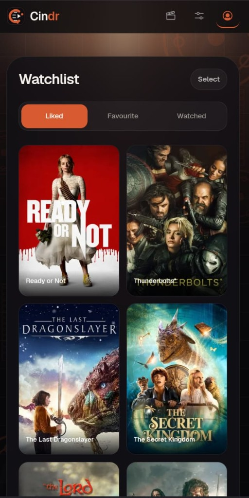
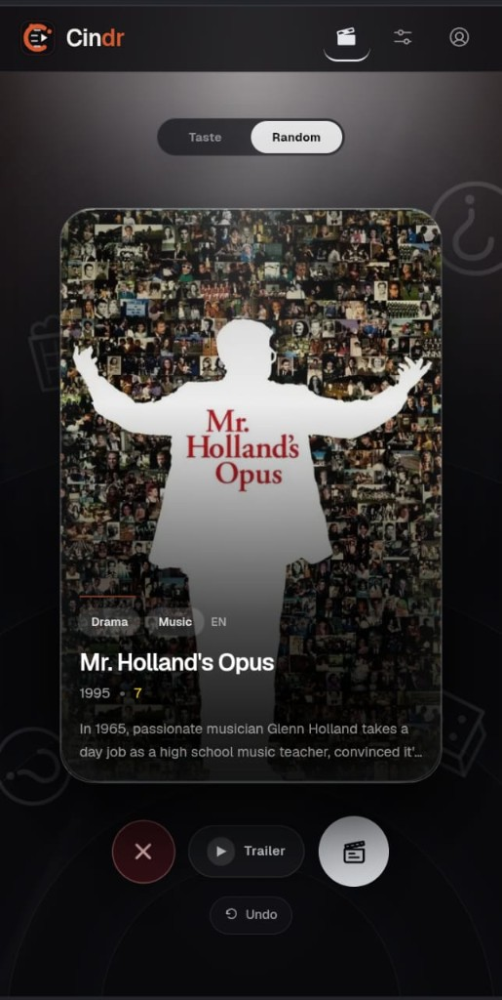
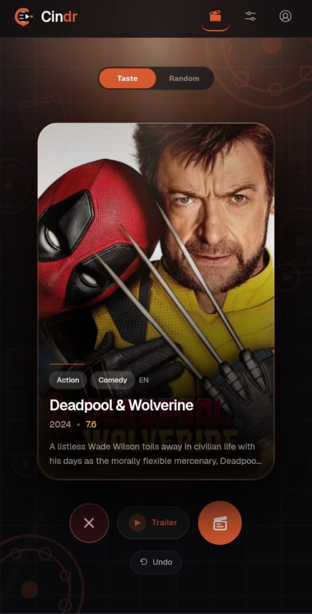
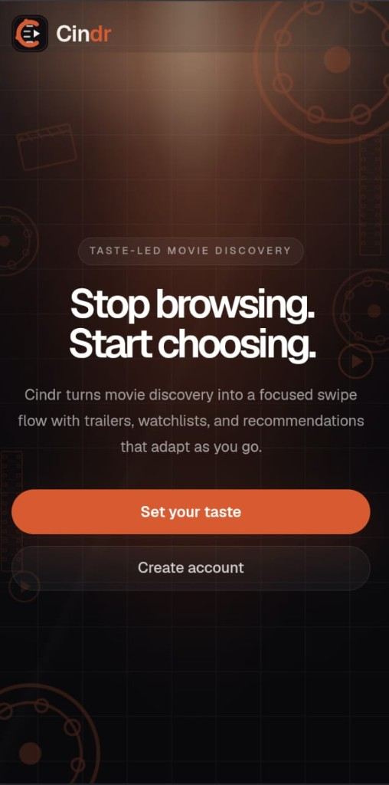

No lists. No filters. No algorithm pretending it knows you. One card at a time. Left, right, or up. Your taste does the rest.



Every swipe is a data point. Genre, mood, era, language - weighted and decayed so what you liked last week matters more than what you liked last year. It never asks. It never explains. It just gets better. Flip to Random when you want it to surprise you instead.

HomeYou just haven't found it yet. Open Cindr. Swipe until you do.
Open Cindr →“ Most people don't have bad taste.
They just never had a reason to find out what their taste actually is. ” - Cindr